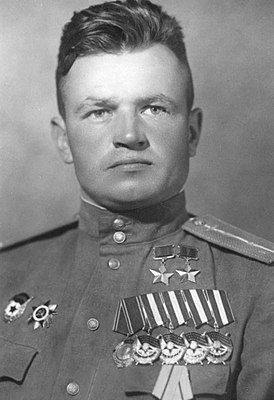
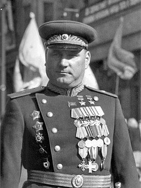

Герой Советского Союза — высшая степень отличия СССР. Почётное звание, которого удостаивали за совершение подвига или выдающихся заслуг во время боевых действий, а также, в виде исключения, и в мирное время.
Павел Яковлевич Головачёв (15 декабря 1917 — 2 июля 1972) — советский лётчик-ас, участник Великой Отечественной войны, дважды Герой Советского Союза. Всего за время войны совершил 457 боевых вылетов, в 125 воздушных боях сбил лично 31 и в группе 1 самолёт противника. Свою последнюю победу одержал 25 апреля 1945 года в небе Берлина (сбил 2 FW-190).
Степан Фёдорович Шутов (17 [30] января 1902 — 17 апреля 1963) — советский офицер-танкист, участник Гражданской и Великой Отечественной войн, на фронте Великой Отечественной войны — командир 20-й гвардейской танковой бригады (5-й гвардейский танковый корпус), полковник (1944). Дважды Герой Советского Союза (1944, 1944).
Иван Игнатьевич Якубовский (25 декабря 1911 (7 января 1912) — 30 ноября 1976) — советский военачальник, Маршал Советского Союза (1967). Дважды Герой Советского Союза (10.01.1944, 23.09.1944). Герой ЧССР (30.04.1970). Член ЦК КПСС (1961—1976).
